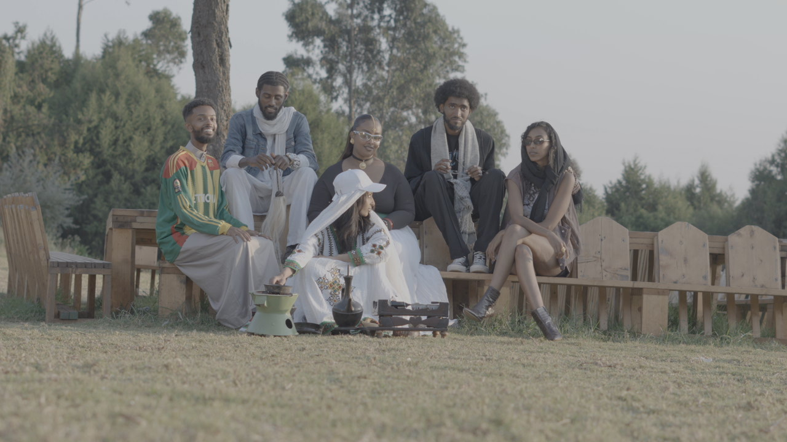

Documentary · End-to-end production
20 Years of Excellence
Produced an 18-minute documentary presented at the U.S. Embassy to international sport leaders.
Read case studyBeyond development
Documentary production, business operations, marketing, and community work. Supporting context for ownership and collaboration.
Secondary project archive
Documentary · End-to-end production
Produced an 18-minute documentary presented at the U.S. Embassy to international sport leaders.
Read case studyField documentary · Creative direction
Led story, logistics, and production for a documentary made in one of Ethiopia's most demanding environments.
Read case studyEntrepreneurship · Service operations
Built a profitable education consultancy from zero and scaled delivery to a seven-person team.
Read case study
Content systems · Media production
Rebuilt an inconsistent content operation into a repeatable release system without flattening the creative process.
Read case studySocial growth · Content operations
Led TikTok content strategy and a three-person creative team, growing the account from 20+ to 6,000+ followers.
Read case studyInternational program · Team leadership
Led eight people from six countries through community health outreach work without a shared native language.
Read case study